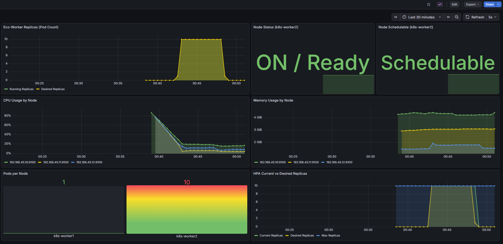
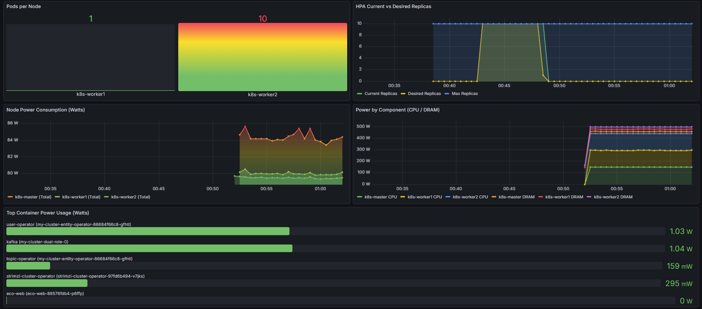

유휴 베어메탈 서버 전력을 0W로 만드는
이벤트 기반 물리 노드 자동 전원 제어 플랫폼
퍼블릭 클라우드는 서버리스로 해결했지만, 온프레미스 베어메탈에서는 트래픽이 0이어도 서버가 24시간 가동. 유휴 서버 1대의 대기 전력 ~300W, 연간 2,628 kWh. Kubernetes HPA는 Pod 수만 조절할 뿐, 물리 서버 전원은 제어하지 못합니다.
Kafka 비동기 버퍼링 + KEDA Zero-Scale + 커스텀 GreenOps Controller(WOL/SSH)를 결합. 유휴 Worker Node 전력을 물리적 0W까지 절감. 새 요청이 오면 Wake-on-LAN으로 수 초 내 부팅, 즉시 처리합니다.
영상 업로드 → Kafka Lag 발생 → KEDA가 Worker 0→10개로 즉시 확장 (반응 <2s)
Worker1만으로 수용 불가 → Pod Pending → Controller가 Worker2에 WOL 전송 → 부팅 → Uncordon
10개 Worker가 Kafka 파티션 1:1 병렬 소비 → FFmpeg 영상 처리 → Lag 소모
Lag 0 → 30s 쿨다운 → Pod 0 → Descheduler 빈 노드 생성 → Controller SSH Shutdown (전력 0W)


Worker 0개 상태에서도 메시지 유실 없는 영속적 큐 필수. Consumer Lag이라는 스케일링 지표를 KEDA에 직접 제공.
kubectl, etherwake, ssh 등 CLI 호출이 핵심. 5개 상태를 100줄 Bash로 구현하여 운영 편의성 확보.
물리 서버 전원이라는 하드웨어를 K8s 이벤트와 연동하여 소프트웨어적으로 자동화. bare-metal 전체 스택 직접 제어.
Prometheus + Grafana + Kepler로 "측정 → 개선 → 증명". eBPF 기반 전력 측정으로 절감 효과를 정량적으로 검증.